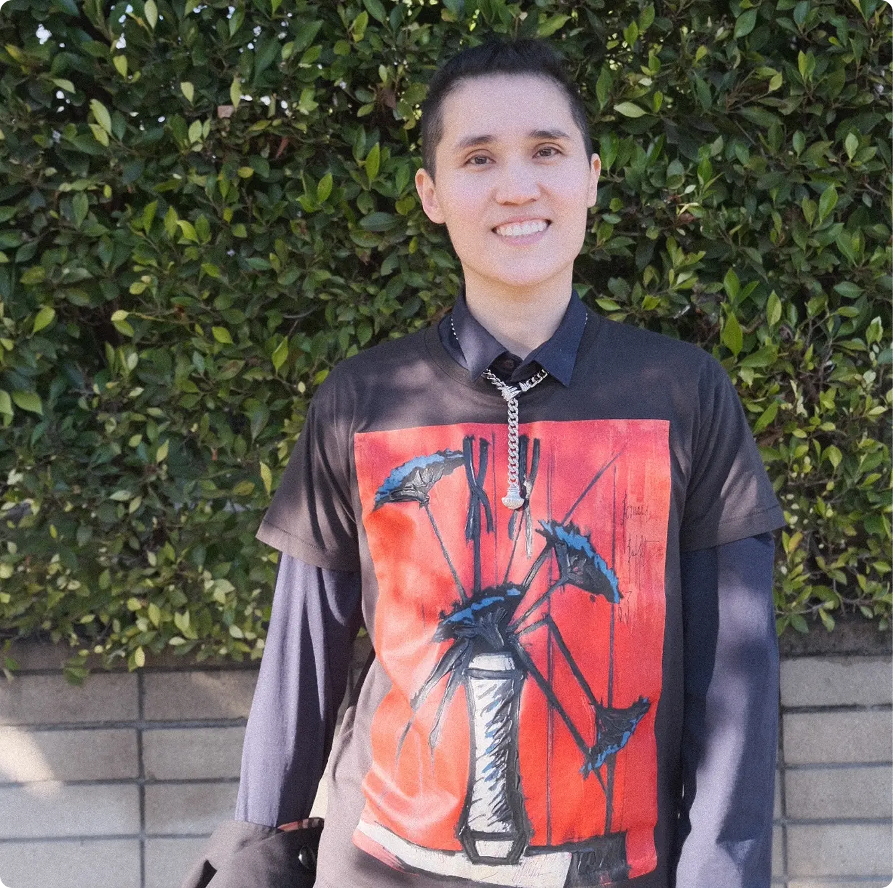
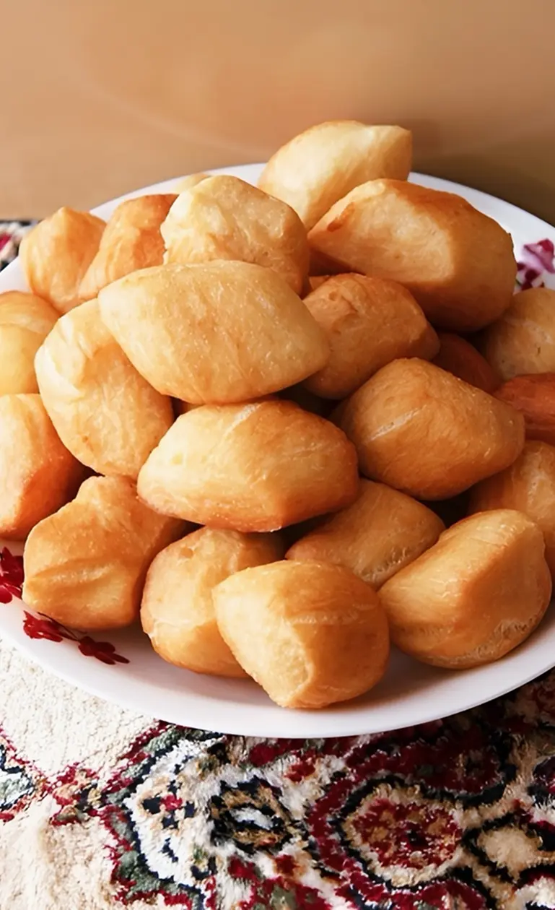
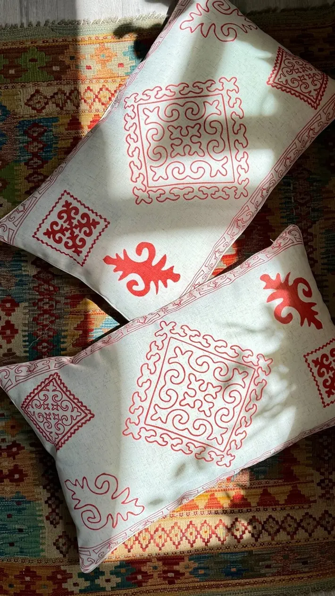
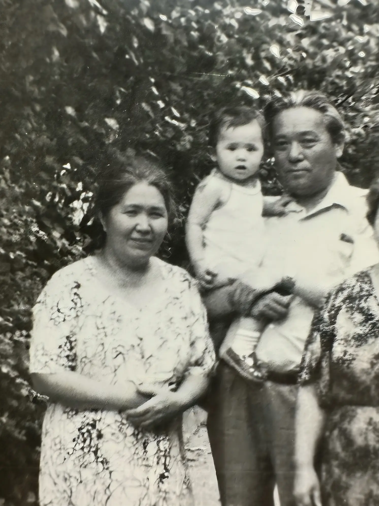
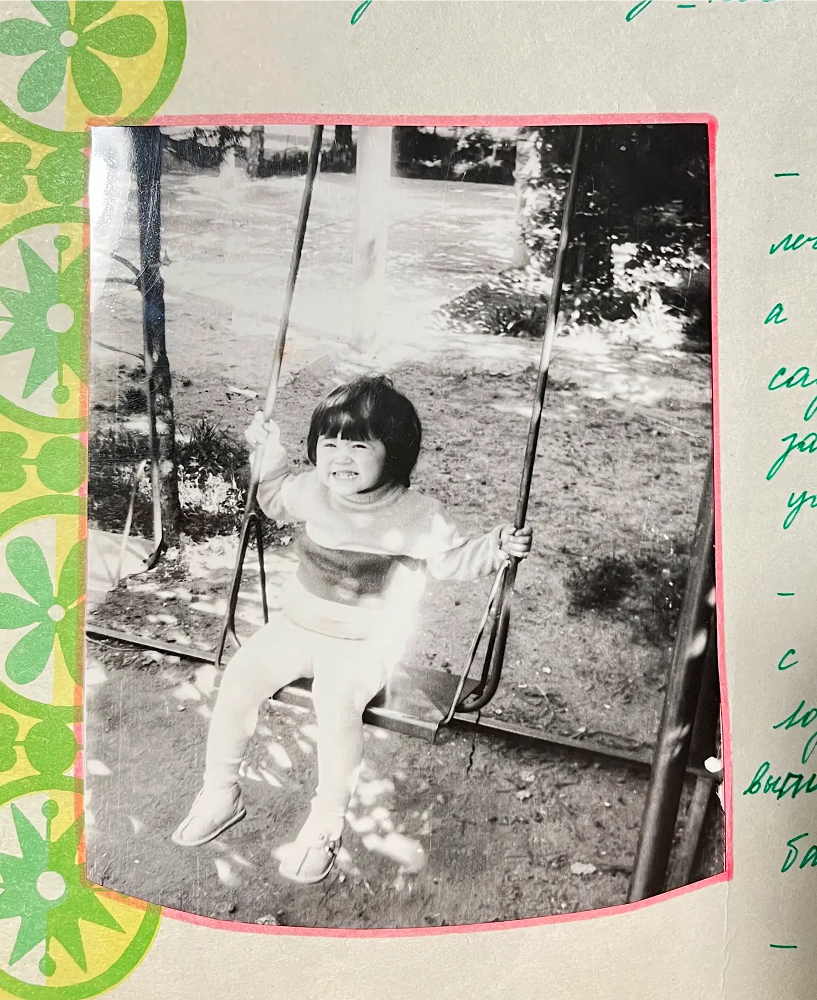
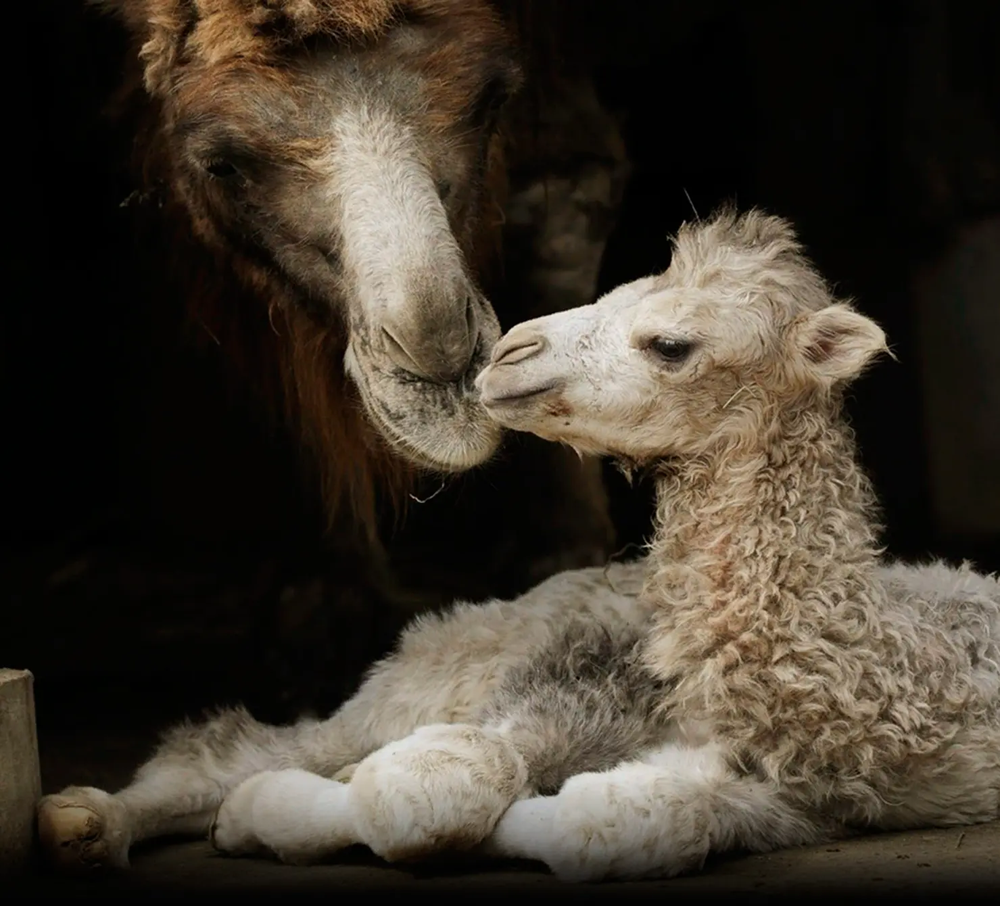
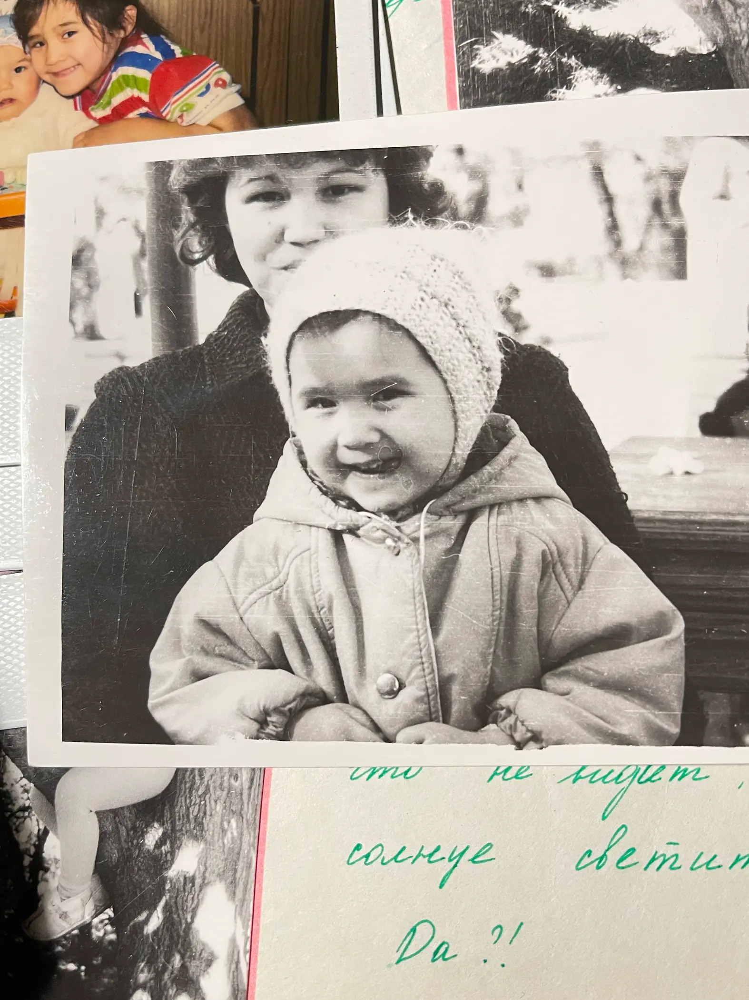
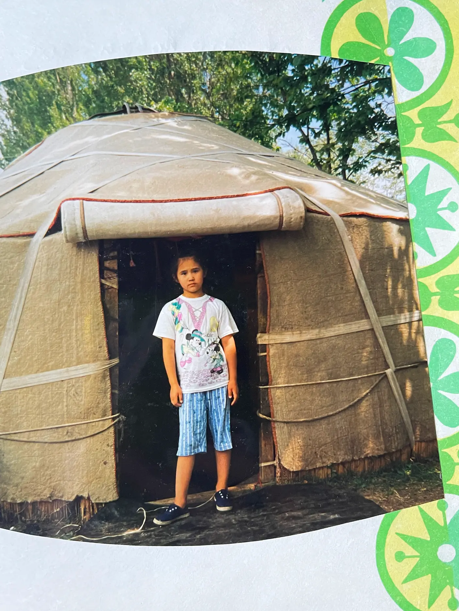
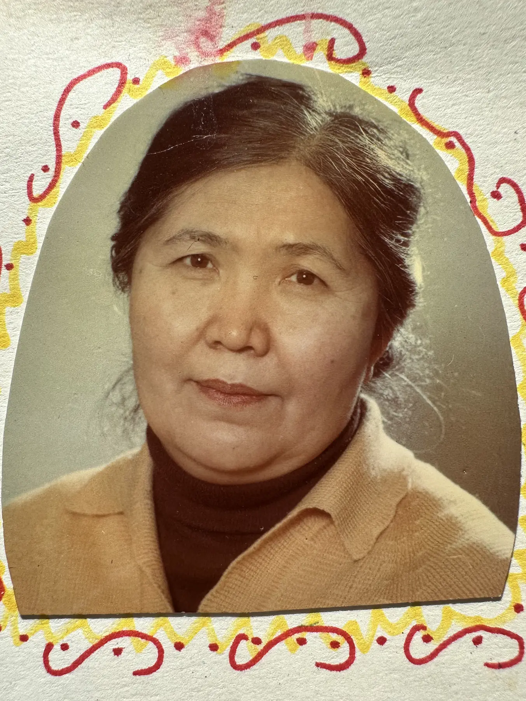

НАЗВАНИЕ СТАТЬИ (В НЕСКОЛЬКО СТРОК ДЛЯ ПРИМЕРА)
#ХештегРаз
#ХештегДва
#ХештегТри
#ХештегЧетыре
“И пусть наши призраки никогда
не покидают нас.
А теперь о ней знаете и вы.
Пусть и в вашей голове звучит
её чудное, нежное имя –
Санжан.”
Квартира была трехкомнатной
и огромной.
В правительственном доме.
Я до сих пор помню запах того подъезда – вкусный запах – запах каменной прохлады летом.
Подъезд тоже был большой. Ты входил в него, и он открывался тебе как пещера. Тот самый Сим-Сим-Сезам из Али-Бабы.
У подъезда даже была парадная – парадный вход с улицы – но, как предсказывал ещё профессор Преображенский, в СССР парадную надо заколотить и ходить исключительно черным входом со двора.
Парадная была заколочена. Всегда. Двадцать лет как минимум.
Но подъезд мне нравится всё равно. Я запомнил его летним, в его сине-серой дымчатой прохладе, с его двойными дверями, важными округлыми ступенями, пыльными почтовыми ящиками.
Подъезд очень походил на Макаша Ураховича – важностью, размерами, цветом и этой неотсоединимой внутренней опустошенностью.
Но призрак живущий в квартире – не его.
Квартира на Макаша Ураховича не походила.
Хоть он и старался сделать её похожей. Черной тяжелой лакированной мебелью, не менее тяжелыми и дорогими пушистыми коврами, правительственными обоями. Квартира всё равно не походила на Макаша Ураховича.
На его жену Санжан квартира не походила тоже… с первого взгляда.
Только с первого взгляда.
По-настоящему квартира была её отражением.


Бывает, заходишь в пространство
и сразу чувствуешь в нем уют.
Неодолимое чувство уюта и тепла,
заползающее в тебя из каждой
крошки на ковре.
Ну вот Исаево, а так окрестили
квартиру, никогда не было таким.
Уют в этом доме рассыпался
на осколки и встречался тебе
осколочно. Маленький обрывочек
уюта в запотевшем от холода окне
кухни, пропахшей бешбармаком.
Нитка уюта в старых чемоданах,
сложенных за дверью ажешиной
спальни. Завалявшаяся изюминка
уюта на узорном корпе, брошенном
на диван.
Ты не можешь сказать, что квартира была неуютной. Она была жилой. Надышанной. Используемой. Она пахла людьми, гостями, мясом, баурсаками, чак-чаком. Но уютной она не была
Местами, например, в зале, в холле, квартира была представительной. Отполированной, задуманной впечатлять квартирой крупного советского чиновника-партийца. Но красивой квартира не была никогда. Несмотря на высокие (по советским стандартам) потолки, хрустальные люстры, пушистые дорогие ковры, модные (по советским стандартам) двери и европейский крутой гарнитур. Квартира не была красивой.
Как и ажеша.
Безраздельная хозяйка квартиры, её суть и отражение.

Играя со мной, она называла себя ажекой.
Я звал её ажешой и очень долго не знал её имени.
Зато я знал её запах. Знаю до сих пор.
Зато я знал её запах. Знаю до сих пор. Как запах подъезда, я помню её запах столько, сколько помню себя. Не плохой запах.
Каждый, кто ел хоть раз в жизни стоящий бешбармак, не забудет это солоноватое, нежнейшее, просто нежнейшее, тонкое-тонкое тесто, ласкающее тебе нёбо. Ажеша не всегда пахла бешбармаком, даже не всегда пахла кухней, на которой она жила, но если описывать как-то её запах, то сложно не представить это влажное, соленое, горячее, нежное-нежное тесто.
А ещё – казахи не пахнут.
Не важно, как они потеют, их тела не окрашивают весь воздух вокруг этим ужасным запахом пота. Моя другая бабушка – русская. Я с детства знал разницу в запахах. Не только по бабушкам, надо сказать. По многим, и многим, и многим знакомым. Говорят, это генетика. Как азиатская кожа стареет медленнее, куда медленнее и неохотнее образуя морщины, так казахи не пахнут. За редкими исключениями.
Может, поэтому, проявляя нежность, казахи куда чаще нюхают объект ласки, чем целуют.
Ажеша занюхивала меня.
У неё был масляный голос. По-казахски масляный голос, чем она гордилась. Она считала себя великолепной певицей. Петь она любила и была убеждена, что умела.
В детстве я находил её пение специфичным. Она могла хорошо петь. Иногда. Но всегда и неизменно пела с душой. Она так проживала то, что она пела, что какие-то огрехи можно было и опустить.
Сейчас я не знаю ни девичьей фамилии, ни отчества ажеши. Мне осталось только её имя – Санжан.
Благородное имя какой-нибудь красавицы из легенды. Ей нравилось её имя.
И ей нравилось производить легенды о своей жизни.
Были факты, которые она никак не могла изменить: она поступила на медицинский, работала врачом, вышла замуж за Макаша Ураховича, вырастила двоих сыновей.
Были факты, которые она никогда не сказала бы: аборты, алкоголизм мужа, возможно, до его безразличия, его грубость. Вероятно, измены. Но измены не имели значения. Они были в нетрезвости и по noblesse oblige – так со времен Сталина поступали все крупные партийные чиновники, надо не выделяться.
А вот всё остальное, ажеша верила, можно переписывать под настроение. Сегодня, наливая мне лагман, она рассказывает мне гордую историю self-made успеха. Как она жила чуть ли не в юрте, бедная девочка из бедной семьи, как она ходила в школу по десять километров, прилежно училась, мечтала уехать в город мечты – столицу, Алма-Ату. И как только благодаря себе она сделала это. И даже поступила на медицинский, куда поступить вообще могли только избранные. И вот последнее – правда. Русская бабушка три раза пыталась и все разы проваливала экзамен.
На «и вот так я поступила» триумфальная история чуть ли не о девочке-сиротке, поднявшей выводок своих младших братьев, заканчивалась.
А уже завтра ажеша не менее увлеченно могла рассказывать, что она вообще потомок знаменитейшего батыра, и как чудесно жили её родители, какими важными людьми были её деды, каким роскошным был их дом.
И ты никогда не чувствовал необходимости призвать её к ответу за противоречия.
А чувство справедливости во мне крайне обостренное чувство, так
что если я никогда не хотел призвать её к ответу, это значит, что
намерения у ажешиных историй были чище ледниковой воды.
Она скрашивала себе так жизнь,
и пыталась раскрасить жизнь мне.
Она боготворила меня.
И, слава богу, настоящей дочерью степи, ажеша никогда не выдавала трусливой ахинеи из разряда «люблю всех детей одинаково». Она была очень открыта во всех своих привязанностях и выражениях чувств, по крайней мере, со мной. И столько раз признавалась мне, что я – её самое-самое. Из всех внуков нет у неё никого любимей меня. Я её айналайн – то-вокруг-чего-я-верчусь. Центр её мира.
И что ни в кого она не вложила столько души, как в меня.
Я помню, как жадно она целовала мне руки даже за самые крохотные мои проявления доброты. Например, растереть ей спину проспиртованной ваткой.
Ажеша судорожно стеснялась своего тела.
По-моему, когда я родился, ей не было и пятидесяти, но она уже выглядела совсем бабушкой. У неё уже была трофическая язва на одной ноге, больное колено на другой, странный и страшный шрам на боку – не уверен, если из-за аппендицита. Она очень сильно хромала. И артрит уже перекрутил все её пальцы, изогнул их, как сосны, растущие под степным ветром.
Что ещё остается такой женщине, как не придумывать истории о том, насколько безудержно она в юности была красива?
Что ещё оставалось ажеше, как не придумывать истории о своей жизни?
Я не знаю, если она была строгой матерью, я слышал от Сауле, своей биологической матери, что Санжан когда-то могла и всыпать своим сыновьям. Может быть. Меня она только занюхивала, закармливала и целовала мне руки.

Самое больное, что она мне
делала, – так это читала сказку про верблюдицу.
Я был маленький – два года, может, три. Помню я себя примерно
с двух.
И вот она забирала меня в спальню, брала книжку. У неё из
детских было две – про Алдара-Косе и про эту злосчастную
верблюдицу.
Я был очень капризным ребенком. Конечно, я мог ей отказать и
не слушать. Но, на моей памяти, я так
не поступал. В два года я бы
никогда этого себе не
сформулировал, но сейчас могу сказать – я даже в два года ей
не отказывал в этой книжной
экзекуции, потому что это было бы
как пнуть щенка, который изо всех
сил тянется к тебе своей недоласканной мордочкой.
Я не знаю, почему я не мог ей объяснить, как люто я ненавижу обе книжки. Ну, может, потому что мне было два года. Она сажала меня к себе на колени, раскрывала книжку, и я страдал. От ярости и ненависти.
Есть рассказы про Ходжу Насреддина – и они здоровские. Остроумные, веселые. Ходжа Насреддин – такой восточный Робин Гуд, который выигрывал не через крепкость рук, а через наточенный язык и бьющий без промаха мозг.
Алдар-Косе должен быть его казахским аналогом, но нет! В историях о Насреддине Насреддин восстанавливает справедливость и всегда ловко. Остроумно.
Истории об Алдаре-Косе – это истории о скотинах. О тупых, жадных бездарях, действующих из уродства и ради уродства. Что всегда вызывало у меня ярость. Даже в два года истории об Алдаре-Косе лишь распаляли мою кровожадность. Я слушал ажешу и истово желал зарубить всех действующих лиц мечом, сжечь огнем и утопить в луже.
Но самое худшее – это была история про верблюдицу.
Та, что больше всего любила ажеша.
Верблюдица родила верблюжонка, и они были так счастливы, но потом верблюжонка угнали. Так началось её хождение по мукам. Где только не была и что только не делала старая верблюдица, и, главное, в других сказках бездарным и бесполезным Иванам-дуракам и Золушкам помогают то птички, то рыбки, то звери, а здесь все с верблюдицей, ну буквально каждый, кого она встречает – сука.
Каждый заставляет её только больше страдать.
И я помню, как она стремится к своему верблюжонку по какому-то коридору из людей, и все её бьют палками. И она его не находит!
Она умирает, не найдя своего верблюжонка!
Избитая и израненная!
Представляя, как она сейчас умрет и уйдет навсегда пастись на зеленые луга, где он её встретит.

Я рыдал.
И ненавидел людей.
За все их уродства.
Чувствуя всем позвоночником, что
вот эта история куда ближе
к реальности, чем сказки
о всепомогающих рыбках и зайчиках.
Какой Андерсен? После такой
верблюдицы любая «девочка со
спичками» даже не затравка.
А ажеша явно ассоциировала себя
с этой верблюдицей.
Это был грустный пересказ её жизни.
Может, без экзекуций палками, но…
На жизнь ажеши можно посмотреть с двух ракурсов:
сытая жена партийной шишки в дорогущей и тяжелой каракулевой шубе, с домом — полной чашей, где принимают гостей каждые выходные и стол ломится от мяса и сладостей. Женщина, ездящая отдыхать в самые крутые санатории, и чей муж в советское время «рассекает по заграницам» — ближним и дальним. Из Чехии или из Польши он отправляет домой целый гарнитур, из Италии привозит одежду… это я даже не говорю о том, что привозят ему, потому что аташе все везли подарки, все старались его задобрить. Причем это продолжалось по инерции даже тогда, когда Союз уже рухнул, а аташа оказался либо слишком совестливым, либо слишком трусливым, чтоб прихватизировать то, что мог.
Но даже тогда они устроили сына в КНБ (аналог ФСБ), и съездили к нему в Париж. Погуляли по Европе.
А потом, конечно, разочарованность сыновьями. Не такая жгучая, как у мужа. Но – разочарованность. Особенно старшим.
Потом рак. Не у ажеши. У Макаша Ураховича. Долгий.
И медленное, медленное угасание.
Кажется, официально ажеша умерла от печени. Я уже жил в США. Но даже до отъезда било в глаза, как её забирает деменция.
Не думаю, что ажеша страдала от деменции.
Иные формы деменции (большинство на деле) очень мягки к «хозяевам». Когнитивное угасание происходит плавно и незаметно для самого человека. Просто свет в голове становится всё тусклее, тусклее, тусклее – пока не исчезает вовсе. Ажеша умерла раньше, чем это. Чем полная темнота в черепе.
Умерла, уже вовсе не помня всего, что могло её волновать.
Интересно, куда она ушла на то самое мгновение отключающегося мозга, которое для умирающего длится вечность. Бабушка (русская) явно отправится в детство. К матери. К Доминике Александровне. Бабушка была наиболее собой и наиболее счастливой лет в восемь. Туда – в челябинскую избу и вернется.
Но ажеша?
Она не любила своё детство. Не думаю, что она провела детство в прохудившейся юрте сироткой, но это то, как она ощущала себя, а ведь в конце дня нам остаются лишь ощущения. Так что все рассказы ажеши – правда. Не важно, что она (скорей всего) не жила в юрте, а если даже жила, то явно не в прохудившейся, но если она так ощущала себя, то, значит, то – правда.
Вряд ли она вернется в замужество. После смерти аташи она всех залила историями о великой и чистой любви Макаша и Санжан, но к ней мы ещё вернемся. Я не думаю, что ажеше хотелось бы уйти в замужество.
Скорей всего, умирая, её мозг убаюкивал её картинками её студенчества. Где она ещё не перевитая, не пережеванная язвами девушка с роскошной иссиня-черной гривой волос.
Девушка, которой имя её всё ещё обещает роскошь: Санжан – роскошная душа.
Девушка, перед которой всё ещё открыты все пути, все самые блистательные будущие.
Девушка-хохотушка и запевала.
Отличница и комсомолка.
Которая гордится своей такой тонкой талией и роскошной гривой.
Гордится своими огромными миндалевидными глазами, которые достались мне от тебя.
Как и роскошные, черные, густые волосы.
Забавно, что обе мои бабушки на самом деле вовсе не дорожат своими детьми. Дети случились с ними, как варикоз или трофическая язва, вот уж не минутами материнства они захотят убаюкивать себя в самый последний сон.
Казалось бы, неплохая жизнь была у Санжан.
Бывает настолько хуже.
Но это только один ракурс. А есть и другой:
вот тут появляется муж.
Каракулевая шуба с каракулевой высокой шапкой.
Да, но они были одни. На всю жизнь.
Дорогой жемчуг – да, но один. На всю жизнь.
Шуба – статусная. Чтобы не выделяться. И украшения тоже – дорогие, как надо, как правильно, чтобы не выделяться. И жена тоже. Потому что так надо и правильно. Ну что же ему – выделяться?
Великая и чистая история любви Макаша и Санжан изменялась в зависимости от того, какие сериалы смотрела ажеша. А ажеша – рекордсмен по просмотрам латиноамериканской мыльной оперы. Всякие турецкие султаны никогда не волновали её сердце – в этом для тюркоязычной женщины из степи нет экзотики – ни в гаремах с байбише и токалками, ни в аллахе, ни в султанах – слишком хорошо она знает, как это жить с одним из них. Вот она и залипает на горячих Педро и Пабло, которым их католицизм разрешает лишь одну жену. Одну любовь.
И вот она сидит, шестидесятилетняя, массируя пульсирующее колено, в большом зале в коврах, предвкушая новые страдания Анны-Марии-Розалии-Асунсьон-Варгас, которые обязательно закончатся счастливо серий так через 468. И все 468 серий ажеша сможет фантазировать о том, как ей дарят цветы (чего Макаш не делал никогда, а если делал, то чтобы не выделяться), её выкрадывают на автомобилях, ей говорят, как по ней истомились и какая она исключительная. И ей, наконец-то, ну наконец-то тепло.
Потому что в жизни было не так. В жизни не было цветов. Слов. Безделушек. Прогулок. Я не знаю, если Макаш ухаживал за Санжан. При этом я не сомневаюсь, что Макаш был способен любить. Но быть способным не значит применять эту способность. Я не думаю, что Макаш любил кого-либо из своей семьи. То, что он делал, он делал из долга. Из понимания, что так надо. Так принято.
Я думаю, что Макаш женился на Санжан, потому что так было надо. Для карьеры. Для статуса. Он просто должен был жениться в тот год. А Санжан – подвернулась под руку, подошла больше других товаров на рынке.
Думаю, что и Санжан выходила за Макаша не по истовой и вечной любви, а потому что так было надо. Для статуса. Чтоб чувствовать, что всё правильно и вовремя успеваешь по жизни. И очень возможно ещё – из-за денег. Если Макаш уже неплохо двигался по карьерной лестнице, то это был самый правильный момент выходить за генерала, который уже не лейтенантик, но ещё и не генерал. Потому что известно – за генералов замуж не выходят, они все уже с женами. Вот Санжан поторопилась урвать себе билет туда – в верхушку, в правительственные квартиры, в жизнь с водителем и правительственной Волгой. В жизнь, где больше никогда не надо стоять в очередях, где всё привозят на дом с поклонами и благодарностями – рахмет вам, кёп-кёп рахмет, Макаш-ага.
И вышла замуж Санжан не за горячего страстного Пабло, а за заядлого курильщика и алкоголика, который минимум раз в неделю устраивал той у себя дома. И это был расчет. Аташа любил застолья, но и хорошо понимал, что застолья с правильными приглашенными двигают карьеру вперед.
Возможно, аташа не столько любил крепкие напитки, сколько крепкие напитки были необходимым атрибутом советского «нетворкинга».
Зато сигареты аташа любил. У него легко уходила пачка в сутки. До рака.
В воле Макашу не откажешь. Когда у него начались проблемы со здоровьем, он практически за раз перестал пить. Когда у него нашли рак, он так же резко бросил курить. Бесшовно. Если он и страдал, то никто и никак – ни в жизни – этого не заметил бы.
Но бросил пить и курить он не рано. Хорошо так за пятьдесят, когда большая часть жизни с ним у Санжан уже прошла.
И вот он другой ракурс: ажеша как домашний эльф Добби. Пусть не в обносках, но в домашнем халате. Красивых платьев у Санжан было на самом деле вовсе не много – и все напоказ. А что жена носила дома, в чем готовила бесконечные лагманы, бешбармаки, манты, мясо с картофелем – это аташу не волновало. Оно не стоило трат. Вот у ажеши и было два домашних халата, которые она меняла по мере запотевания.
Ажеше не надо было стоять в очередях и бегать по магазинам – все продукты ей привозили корзинами на правительственной машине.
И, конечно, у ажеши была помощь на все тои – казахи не нанимают горничных или уборщиц, аташа просто пригонял всех молоденьких родственниц и невесток – они жарили, парили, мыли, накрывали, убирали, вносили, уносили, раскладывали, доливали… но так или иначе жизнь ажеши стала кухней.
Её жизнь была ещё ограниченнее, чем жизнь женщин в Третьем Рейхе – у тех было хотя бы три К – дети, церковь, кухня.
А у ажеши не было даже церкви.
Зато был муж, единственный, с кем можно общаться, но как только ажеша начинала стрекотать, Макаш – истинный мачо – просто бросал ей – ой, Санжан, койши, шайши. Что переводится как – ой, Санжан, чай пей, да.
И ажеша пила.
Я не помню ни разу, чтобы они ругались.
Я не помню ни разу, чтоб аташа повышал голос.
И не помню ни разу, чтоб ажеша с ним не соглашалась.
И никакие трофические язвы – не повод помогать жене. Но ради справедливости я напомню – и свои страдания Макаш никогда никому не являл, ни на кого не выливал – и от алкоголя, и от сигарет он отказался раз и навсегда и страдания его по ним никто не видел. Даже с раком Макаш продолжал ходить на работу. Во многом, потому что другой жизни у него и не было. Но Макаш делал бы то, что должен с любыми болезнями, и того же ожидал от жены.
И жена подчинялась его ожиданиям. Старалась соответствовать как могла.
Но что бы ажеша не рассказывала об их великой любви, иногда я сомневаюсь, чтоб он сказал ей в жизни больше десятка фраз. Просто они часто повторялись. И самой частой из них была, конечно, коронная «Ай, Санжан, чай пей, да».
Она была с ним до конца.
Я до сих пор вижу, как они проходят под окнами – он со своей генеральской осанкой – прямой навсегда спиной – впереди – неспешно и важно. Очень элегантно. И ковыляющим позади утенком, хромая и переваливаясь, спешит ажеша, всё пытаясь нагнать мужа.
Они никогда не ходили рядом. Он никогда не держал её за руку. Они шли именно так – он впереди, важный и гордый, и ковыляющая, не поспевающая, но знающая своё место сзади, ажеша.
Поэтому другой ракурс на жизнь ажеши – это ракурс домового эльфа Добби. Которого иногда презентуют людям, тогда его приодевают, но это не его шубы, платья, жемчуга, французские духи. Это noblesse oblige. А у самого Добби есть два халата, одни гамаши и одна водолазка – утепляться под халатами зимой. Один халат синий, другой голубой. На годы. Навсегда.
И такая же навсегда недолюбленность.
Чего ей не хватило, чтоб Макаш её полюбил?
Любила ли она его?
Могла полюбить. Хотела бы. Изо всех сил придумывала себе влюбленность в юности. Влюбленность – смазка, помогающая тяжелому и неуклюжему движению брака. Изо всех сил придумывала себе влюбленность в старости, примеряя на себя всевозможные сериалы.
Но ковыляла она за реальным, живым Макашем неотступно.
Дома всегда были еда и чай.
И дома всегда была она.
Может, уже заболев, он и научился ценить её щебет – чаще всего о родственниках. Не о сериалах же ажеше с ним говорить, а что ещё было в её жизни?
Были, конечно, книги – романы на казахском, песни, мечты и чаяния, но это всё осталось там, у девочки-студентки, а не у хромающего домового эльфа.
О стихах и романах ажеша с аташей не говорила. Наверное, никогда. Даже в самый бурный период его «ухаживаний».
Но она всё равно оставалась веселой.
И я помню её масляный смех.
Он шел у неё легко.
Потому что глаза её горели всегда озорством.
В ней была неубиваема маленькая лукавенькая девочка, желающая шалить.
Шалить с трофической язвой трудно, но я помню, как мы ходили гулять – мне два года, три, четыре, пять… В два все так хохотали, заметив, что, когда я хожу с ажешей, я тоже прихрамываю, копируя её. Я помню её шкаф – иногда там прятались конфеты, но всегда жили такие сокровища, как шкатулка с редкими красивыми пуговицами. Украшения. Косметика. Пудровый запах шкафа ажеши. Не все полки пахли пудрово. Иные пахли лекарствами. До косметики и лекарств мне дела не было вовсе, но вот пуговицы – это сокровище. Мне нравилось рассыпать их, перебирать, пересматривать, расселять по компаниям, а потом снова ссыпать в лакированную роскошную деревянную шкатулку.
И всё, что я бы ни делал, её… мои глаза – глаза такой же формы и такой посадки – встречали со светящимся озорством.
У ажеши был красивый рот.
Пухлые красивые губы. Не губы ниточкой, и не скучные одинаковые вареники, выходящие из-под шприца. Пухлость губ у неё была своя. И цвет у них был не красный, а даже немного уходящий в лиловый. Бургунди цвет.
А может, Макаш заметил её за озорство в глазах – сложно не заметить девушку с такими веселенькими глазами.
Чего ей не хватило, что он так её и не полюбил? Не взял её ни в одну поездку за границу, пока сын не подумал сделать визу и матери.
Презентабельности?
Она слишком рано согнулась? Слишком рано располнела, захромала?
Слишком рано её пальцы перестали напоминать бамбук и стали напоминать ветви каких-то причудливых погнутых ветром деревьев?
Я знаю, за что ещё можно было
ажешу любить.
Помимо её озорных, жадных до происшествий, до открытий глаз, её можно было любить за отсутствие жалости к себе.
Она судорожно стеснялась своего тела, но никогда себя за него не жалела. Никогда её живые глаза не подергивались отталкивающей пеленой «бедная я, несчастная».
Жалость, как болото, чувствуешь по вони. Даже когда тебе не тыкают ею в глаза. Ажеша так никогда не воняла.
Она делала разное – бабушка, мать моей биологической матери, жаловалась не раз, что ажеша с ней иногда начинала разыгрывать из себя леди. Важничать. Может быть. А может, той так казалось.
Ажеша могла быть и была не самым глубоким созданием.
Не самым вдумчивым.
Санжан была суетлива. Сегодня ей скорей всего диагностировали бы ADHD или OCD. Когда она кормила людей за кухонным столом. А кухня большая, солнечная, если гостей был не целый той, то их могли посадить и на кухне. На кухне ела семья в обычные дни. Так вот, когда ажеша кого-либо кормила, она всегда сидела за столом, выдрессированная аташей – молча, если ты сам не начинаешь с ней заговаривать. И пока она сидела, она постоянно переставляла сахарницу, поправляла хлебницу, двигала, терла, подналивала, проверяла. Вся эта маленькая сутолока не раздражала. Я не знаю, если Макаш замечал, как на деле важно её молчаливое присутствие. Её такая постоянная, неотступная, рутинная забота.
Ажеша была паникерка. Но у неё был такой небольшой мир, и ей так не хватало эмоций.
У ажеши дома никогда не было хирургической чистоты. Если она мыла посуду сама, а это не делали пригнанные аташкой помощницы, то посуда была ну очень так себе вымыта. Ну очень так себе. Но стоит помнить – не просто мыть посуду с трофической язвой и артритными пальцами. На что ажеша никогда не жаловалась.
И не так не жаловалась, чтоб потом лопаться вонючими жалостливыми фразами – «да я же вот всё ради вас, а мне никто никогда не поможет!». Нет. Просто. Вообще никогда не жаловалась. Это не приходило ей в голову.
И она никогда не просила меня. Ничего. Только вот – растереть ей спину. А больше ничего – ни убрать за собой, ни помыть что. Зато каждый день она встречала меня таким – жанымсол, конечно-конечно, отдыхай.
А я не понимал – от чего мне отдыхать?

И я мыл иногда. Под настроение. И
она целовала мне руки. А я
обнимал её.
Но так мало.
Так недостаточно.
Я счастлив каждой улыбке, каждой
искорке озорства, что родилась
в Санжан из-за меня. Каждому
крохотному мгновению её
счастьюшка. Но столько лет после
её смерти, мне так жаль, что их
могло бы быть больше.
Могло, а не стало.
Можно легко найти ответы на все
«ой, Санжан, шайши». На то, почему
она так и осталась для Макаша
домовым эльфом.
Но у меня есть вещи куда важнее,
куда драгоценнее – я знаю тайну
куда слаще этой – я знаю, почему
ажешу можно было любить.
Любить за озорство в глазах.
Любить за то, как она не жалела себя ни за тело, ни за отношение, ни за черствость людей вокруг.
Любить за эту верблюжью неотступную неизменную нежность
и верность.
Любить за то, как не хватало ей ласки и коннекта. И я не скажу, что она искала это в других внуках. Чтоб глаза её загорались так же с другими. И я никогда не был зол с ней, но сегодня мне хотелось бы дать ей больше, чем я отдал.
Куанышевна! Вот оно – её отчество. Вроде бы.
Санжан Куанышевна. А девичью фамилию я точно не вспомню. Но ажеша не дорожила ни отцом, ни матерью так, как бабушка. Бабушка не может не рассказать о Доминике Александровне, Григории Никифоровиче, гусях, которых пасла. И всё у бабушки каждый раз одинаковое – правдивое. История не меняется ото дня ко дню. Я знаю, что Григорий умер за восемьдесят и то – от пляски. Я знаю даже, как Никифор не платил пьяницам-батракам, а узнавал у их жен, что надо, и привозил им на своей бричке – сразу в руки масло ли, ткани, сапоги – чтоб мужья не пропили. А вот какой он был – Куаныш?
Санжан это не интересовало. Она не думала, что мне обязательно это знать. Она наслаждалась историями-легендами о своем прошлом. Так и вышло её прошлое легендарным – то с батырами, а то в дырявой юрте.
А я вот хочу, чтоб её имя знали.
Я хочу, чтоб оно звучало,
как её ласки мне – зрачок глаз моих, душа моя, день мой, центр моего мира – то, вокруг чего я верчусь.
Жанымсол – и она втягивает мой запах, как нюхают мак в степи.
Айналайн – она наливает чай.
Я до сих пор слышу её шаркающую походку, и хочу, чтоб её слышали вы.
Её улыбка, её горящие ласковые глаза.
Больше всего, мне кажется, ажеша мечтала о сцене.
Она любила быть увиденной, любила петь, любила внимание.
И она была амбициозной барышней. Она пошла в медицинский не потому, что ей нравилась медицина, а потому, что тогда это было самым престижным, куда можно было поступать. При этом я уверен, она спала и видела себя такой Розой Рымбаевой.
Она всегда боготворила меня так, что сложно было сказать, если мои достижения делали её более гордой. Она просто с моего рождения была убеждена в моей исключительности, так что всё, что бы я ни делал после, лишь подтверждало ей её правоту.

Когда мне было четыре года и мне
говорили, что я на неё похож, меня
это злило – я упрямо не хотел быть
похожим ни на кого из моей родни.
Я свой собственный – заявлял я,
сдвинув брови.
А сейчас я рад смотреть в зеркало
и видеть её рот. Её глаза. Она
отдала мне всё своё самое лучшее.
И пусть оттенок волос у меня
другой, но их густота, толстота и
мягкость – от Санжан.
И привидения не живут в домах.
Они живут в головах. Они
приносят место, где они жили в
каждую новую голову, куда
поселяются.
Этой ночью я видел ажешу в оранжевом, на её кухне.
У неё будет правнук.
Уже есть от других внуков. Но – руку на сердце – я знаю, что ей это не важно.
Я видел её на той же кухне, на которой однажды, когда мне было пятнадцать и у меня было настроение с ней говорить, мы болтали о будущем. И она так просила меня не торопиться с детьми. И я не торопился. Долгое время я думал, что дети мне вовсе не необходимы. Пока другая тоже очень степная девочка не решила иначе.
И уже тогда – в пятнадцать, на солнечной кухне, ажеша сначала очень просила не торопиться, я говорил ей – что дети пока в общем-то я не вижу зачем, а потом она очень обрадовалась, как представила, как однажды будет держать в руках моего ребенка.
При этом она не любила детей.
Не помню, чтоб ажеша кроме меня из всех внуков так кого-нибудь ещё нянчила.
А здесь она очень обрадовалась.
Этой ночью я видел ажешу в оранжевом, сначала хромающую и старую, с сильной сединой во всё ещё черных, длинных, но уже редких волосах. Я показывал ей сына. А у неё, как всегда, закипало что-то на плите, она вставала и помешивала, наливала. И незаметно молодела. Волосы становились всё гуще, тело вытянутее и худее, движения легче.
И ей уже не взять моего сына в руки, но он обязательно будет знать её лицо, её руки, её недолюбленность, её верблюжью верность и её имя – Санжан.
Имя красавицы из казахской легенды.
Он будет знать, что она готовила самый вкусный лагман. Любила свои большие серебряные сахарницы. Носила желтую кофту годами. И всякий раз – каждый день – шаркала мне навстречу по коридорам большой квартиры – жанымсол! Айналайн! Заходи! Отдыхай!
Он будет знать, что у нас с ней похожая форма рта и глаз. Что изящество моих небольших кистей тоже её – и, возможно, вот так выглядели бы её руки, если б их не сжевал артрит.
Я расскажу ему эту травмирующую сказку про верблюдицу, что умерла без своего верблюжонка. Потому что это тоже часть её.
И тогда её призрак поселится со своей солнечной кухней и у него в голове.
В оранжевом платье или синем халате. Шаркающий или легкий. Старый или молодой.
И пусть она от того почувствует себя чуть более любимой.

Хотя бы за то, что настолько и никогда не жаловалась. Всегда старалась подарить хорошее настроение, пока поила тебя чаем, и с такой любовью и благодарностью целовала мне руки за какие-то крохотные проявления заботы.
Мой сын обязан знать, что она вела свой род от великого казахского батыра.
Росла в достатке и богатстве и в дырявой юрте.
Была избалованной дочкой и сироткой, вытащившей всю свою родню.
И пусть он тоже говорит с ней иногда по ночам, пока она кормит его лагманом, о стихах, которые она любит, о песнях, которые может спеть. И пусть она поет ему, как она пела мне, красивым степным маслянистым голосом – с гордостью маленького ребенка, являющего тебе свои сокровища.
И пусть наши призраки никогда не покидают нас.
А теперь о ней знаете и вы.
Пусть и в вашей голове звучит её чудное, нежное имя –
Санжан.